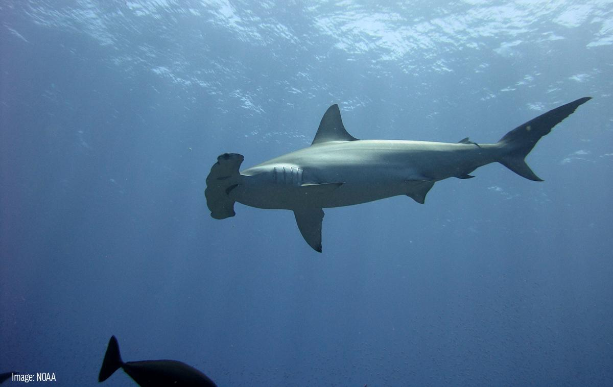

Whale sharks

"As the largest fish in the sea, reaching lengths of 40 feet or more, whale sharks have an enormous menu from which to choose. Fortunately for most sea-dwellers—and us!—their favorite meal is plankton. They scoop these tiny plants and animals up, along with any small fish that happen to be around, with their colossal gaping mouths while swimming close to the water's surface."- Quote from the National Geographic page on Whale Sharks
https://www.nationalgeographic.com/animals/fish/w/whale-shark/

Hammerhead Sharks

"Hammerhead sharks are consummate predators that use their oddly shaped heads to improve their ability to find prey." -National Geographic source on hammerheads
https://www.nationalgeographic.com/animals/fish/group/hammerhead-sharks/

Tiger Shark

"Tiger sharks are common in tropical and sub-tropical waters throughout the world. Large specimens can grow to as much as 20 to 25 feet in length and weigh more than 1,900 pounds."-National Geographic
https://www.nationalgeographic.com/animals/fish/t/tiger-shark/